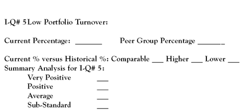

"Critics have long said that money managers who buy and sell frequently are confusing motion with progress." -Ian McDonald, The Wall Street Journal, August 12, 2005
For investors, a mutual fund's transactional activity, or portfolio turnover, is one of the more easily explained investment qualities. Expressed as a percentage, it tells us what portion of the securities (stocks, bonds, or both) in a fund's portfolio are bought and sold during the course of a year.
This information is readily available from any number of sources, including the fund reports we are using, and tells us a great deal about a fund's operations besides the turnover of its holdings. As you will see in the following discussion, the simplicity of this particular piece of information belies its importance as a valuable measurement of a mutual fund's investment quality.
Just to be sure that the concept of mutual fund portfolio turnover is fully understood, let us look at an illustration of just what takes place. In our simplistic example, the XYZ Stock Fund is reported to have had a turnover rate in 2005 of 50% in a portfolio that held 100 stocks as of January 1, 2005. At year-end 2005, the portfolio still contained 100 stocks, but 50 of the original stocks were sold and replaced by 50 new stocks. If the turnover rate was 100%, all 100 of the original stocks would have been sold and 100 new stocks purchased.
Portfolio Turnover and Investment Quality
In the real world of mutual fund investment management, the buying and selling of securities by a fund's manager is part of the business. The issue that needs to be addressed is how this activity impacts the consideration of a fund's investment quality.
Before getting into the details of this discussion, the views of John Bogle, the founder and former chairman of the Vanguard Group, on mutual fund operations are relevant.
Bogle believes that too many funds trade too much. In "Flying With The Fundamentals," which appeared in Better Investing Magazine in January 2006, Bogle is quoted as saying that when he got into finance in 1951, mutual fund turnover hardly varied from 16% per year, representing an average holding period of six years. However, Bogle noted that in more recent years, the average holding period has fallen to between 11 and 13 months, representing a 92% turnover rate.
The problem with increased turnover is that because the cost is coming out of the fund's assets and not the investment manager's fee, there seems to be little incentive for managers to change their ways.
Figure 1 provides some current comparative data on fund portfolio turnover rates. The managed funds category averages mask a wide range of trading activity from low single digit to medium triple digit turnover percentages. The index funds' listing includes individual funds selected from the Vanguard Group for each fund style category. The top-rated funds' turnover rates are for individual funds that have the best 10-year annualized total return from each category.
| Stock and Bond Mutual Fund Portfolio Turnover Rates | |||
| Fund Category | Managed Fund Category Average | Index Fund by Category* | Top-Rated Fund by Category** |
| (As of December 31, 2006) | |||
| Large-Cap Growth | 97% | 25% | 2% |
| Large-Cap Blend | 77% | 7% | 68% |
| Large-Cap Value | 63% | 22% | 8% |
| Mid-Cap Growth | 118% | NA | 63% |
| Mid-Cap Blend | 115% | 27% | 59% |
| Mid-Cap Value | 76% | NA | 7% |
| Small-Cap Growth | 117% | 48% | 50% |
| Small-Cap Blend | 88% | 25% | 11% |
| Small-Cap Value | 68% | 36% | 16% |
| Foreign Stock | 90% | 3% | 201%*** |
| High Quality Bond | 196% | 64% | 16% |
| * A Vanguard Group index fund was selected for each fund category. | |||
| ** Using Morningstar Fund Investor data, the fund with the highest annualized ten-year total return was selected in each fund category. | |||
| *** This is an abnormally high portfolio turnover rate - holding stocks for six months - but true! | |||
| Figure 1 | |||
In Figure 1, portfolio turnover rates are expressed as a percentage. A low percentage figure equates to a longer portfolio holding period and vice versa. For example, 20% turnover means that a portfolio would be completely reconstituted after five years. A turnover of 100% means that a portfolio is completely reconstituted in one year. While most individuals are investing for the long term, it looks like the investment horizon for the average managed mutual fund is closer to one year. The characteristic low portfolio turnover rate of index investing is much in evidence. In all but two fund categories, the top-rated funds have portfolio turnover rates considerably below their respective managed-fund category averages.
Return to the Main Menu.
Why should fund investors be concerned about portfolio turnover? There are four major reasons, and they all impact a fund's investment quality:
According to 2005 Lipper Services data, trading commissions add, on average, an additional 0.15% to fund expenses. While the percentages may seem small, it can significantly ding returns over time. For example, consider two hypothetical $10,000 investments over 20 years in different funds with nontrading (operational) expenses of 1%, one with trading costs of 0.5% and the other with trading costs of 1%. Assuming annual growth of 8%, an investor would end up with just under $34,500 in the first fund and about $31,100 in the second. The $3,400 difference represents a significant 11% bonus in return for fund No.1 over fund No.2.
The Benefits Of Low Turnover
A low portfolio turnover rate is a very positive fund investment quality. However, it must be remembered that the nature or investing style of a fund can impose certain "structural" features on portfolio management that influence its trading activities:
Return to the Main Menu.
The Morningstar and Value line mutual fund reports all present current and historical portfolio turnover figures. This is a useful piece of comparative data. (See sample Morningstar and Value Line reports.)
This is the entry we need to complete in the Fund Investment Quality Scorecard for an analysis of a mutual fund's portfolio turnover:
Targets for portfolio turnover in a managed stock fund would peg the current percentage at or below 30% for a high evaluation and at or below 60% for an above-average evaluation. In addition, the fund's turnover rate should be substantially below its peer group. The fund's current and historical portfolio turnover rates should be comparable, and if the former is lower, so much the better. If these investment qualities are evident, the fund should get a positive rating in this aspect of its operations.
Hopefully, you now have a better appreciation of what portfolio turnover is all about. This seemingly minor percentage figure tells us a lot about a fund manager's commitment to containing costs, which, if the job is well done, makes a fund more profitable and investor friendly.
{kind=link}